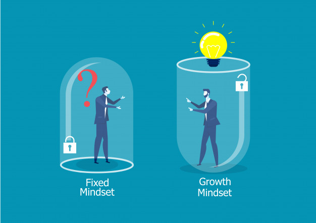
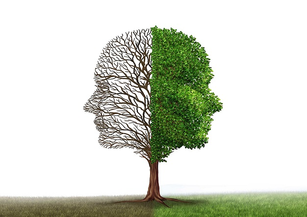

There is no doubt that we live in very busy and technologically advanced times. New technology is being created somewhere around the world right now. It is estimated that average person in XXI century process more information in one day then our predecessors did centuries ago, reading newspapers their entire lifetime. We are literally bombarded with information every day. Therefore, our brains must adopt to the different environment every day. Knowing these conditions, it is very important to understand how our brains are working and adopting to the new reality. That adaptation is known as neuroplasticity. By encountering new challenges and previously unknown tasks our brains must physically change its internal structures. Create new connections that will be used for new abilities. It is self-upgrading structure. Isn’t it amazing?
Knowing that this mechanism exists we can start to use it for our benefit. Imagine that you drive a car on the racetrack. It sounds like fun, but there is no steering wheel inside! You can only accelerate and brake. Sounds crazy, but until you are driving in straight line everything is just fine. By that we can represent fixed mindset. Unfortunately, there is a corner coming in and even more after the first one. That is the moment where your brains neuroplasticity enables you to turn. With the fixed mindset you will not be able to deal with the problem represented by corner as you can’t turn! Knowing about neuroplasticity allows us to create the steering wheel inside, so we can now turn. This example might be bit extreme, but it has a lot of correlations with learning process. If you ever been even playing a racing game, you quickly notice that first lap is the hardest with worst time. As you do another one number of crashes decrease along with time needed to complete a lap. That simply shows when we repeat the same exercise on and on “something” happens and we are becoming better and better. That something is ability of our brain to adopt to earlier unknown conditions. Create new connections responsible for that new ability and constantly improve it. Knowing it we can now use it to our advantage by accepting that first experience/try/exercise will be starting point and from now on our brain will do better and better with every try.
Staying with the racetrack comparison, just as we can upgrade our car by installing new tires, engine, suspension, changing settings which enables us to get some extra boost and complete laps in better times, we can do the same with our brain. We can speed up the process of forming new connections by simply having good sleep, meditation, have regular physical exercise and stay on good healthy diet which adds few things that our brain loves. Very important is also our will to get out of the comfort zone and experience new thing previously unknown to us.
Watching Professor Carol Dweck talking about growing mind set helped me to realise that I must change my mind set from "I cannot do something" to "I am not ready yet". It is such a simple change but surprisingly I already feel my mind changing approach when I use it instead of, I cannot do it. It certainly encourages me to keep trying and keep moving. I will use that growing mindset when encountering challenges that at first look like mountain that is impossible to climb but than it if you know that now is the point where I am standing on the finish line and with every next step, I am closer to the finish. Eventually you will be standing on the summit looking behind how your mindset pushed you there.
Here are couple of YouTube videos that I have used for research on this subject: